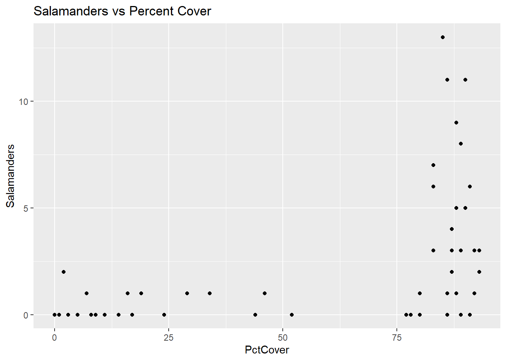
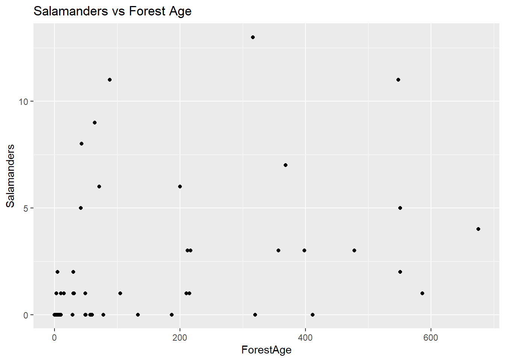
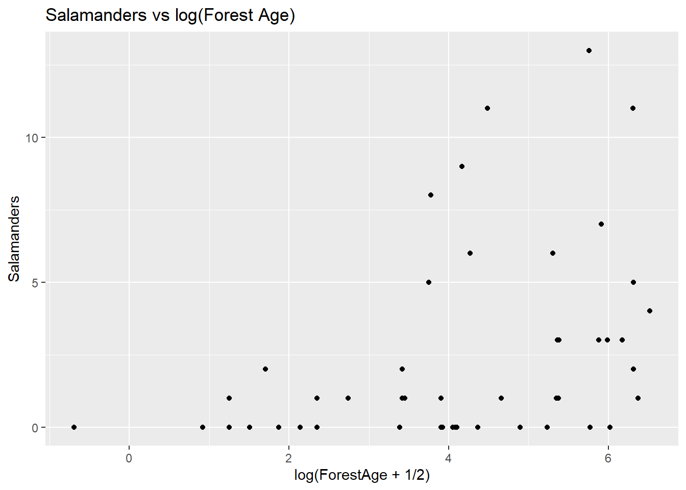
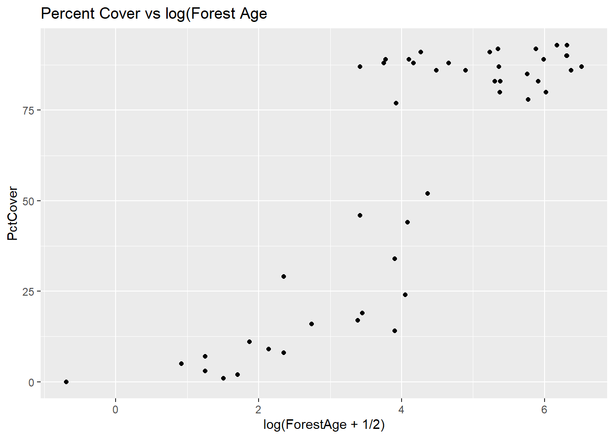
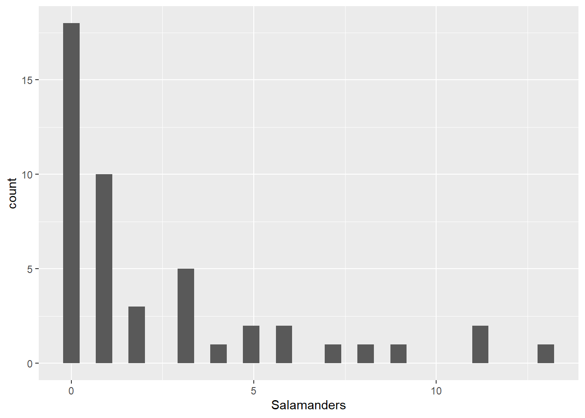

Warning: package 'gnm' was built under R version 4.3.3
Attaching package: 'vcdExtra'
The following object is masked from 'package:dplyr':
summarise
library(magrittr)
Attaching package: 'magrittr'
The following object is masked from 'package:purrr':
set_names
The following object is masked from 'package:tidyr':
extract
In this lab, we’ll go over log linear regression in the case of count data in a little more detail than you saw in the narrated lectures. We’ll cover the deviance goodness of fit test (which, remember, is an informal test here) and the drop in deviance test in R; and we’ll discuss residuals and model evaluation. You’ll see more about over dispersion in the case of Poisson counts, and we’ll cover the negative binomial model for over dispersion. We’ll conclude with another example of log linear regression for general contingency tables.
Salamander Data
The data that we’ll use for this lab concern salamander habitat:
As you can see (and read about in the help file) the salamanders data contain counts of salamanders at 47 sites in national forest and parkland; the available explanatory information is PctCover, a percentage of canopy cover at the site and ForestAge, the age of the forest at the site.
Some data exploration
We’ll start with some exploration of the data.
ggplot(data = salamanders, aes(x = PctCover, y = Salamanders)) +geom_point() +ggtitle("Salamanders vs Percent Cover")

This first figure seems to indicate that there are two distinct types of sites—those with PctCover below about 53% and those with PctCover greater than 75%. It also seems clear that only sites with PctCover greater than 75% have Salamander counts higher than 2.
Here’s another plot:
ggplot(data = salamanders, aes(x = ForestAge, y = Salamanders)) +geom_point() +ggtitle("Salamanders vs Forest Age")

There doesn’t appear to be anything remarkable about this plot, though it’s important to notice the range of the x-axis scale – it’s fairly large. This suggests that we might observe something more informative if we look at ForestAge on the log scale.
ggplot(data = salamanders, aes(x =log(ForestAge +1/2), y = Salamanders)) +geom_point() +ggtitle("Salamanders vs log(Forest Age)")

Notice that we used x = log(ForestAge + 1/2) in the ggplot() function call because some of the ForestAge values are zero, and log(0) is undefined.
This plot seems to indicate a clearer relationship between ForestAge and Salamanders – as ForestAge increases on the log scale, the salamander counts tend to increase and they get more variable. Let’s also look at the relationship between the two explanatory variables:
(ggplot(data = salamanders, aes(x =log(ForestAge +1/2), y = PctCover)) +geom_point() +ggtitle("Percent Cover vs log(Forest Age"))

This plot tells and interesting story – almost all of the older sites are those with PctCover greater than 75%. For the younger sites, there is a increasing (perhaps curvilinear) relationship with PctCover.
Remember that multicollinearity is a problem when two or more explanatory variables are highly correlated. Let’s check the correlation between log-transformed PctCover and the ForestAge variable.
The correlation is not actually so high that we should be concerned about it. Remember, too, that correlation tells us about the linear association between two variables. In terms of a linear association, these two variables are moderately correlated – even though from our last plot we see that there is a strong relationship between them.
Because of the distinctive cut-point in the PctForest variable, we’ll create a new variable, called CovGroup, that just takes the value 0 if PctCover < 75) and 1 otherwise.
`stat_bin()` using `bins = 30`. Pick better value with `binwidth`.

You can see that there are a lot of zeroes in among the Salamander counts. One method for analyzing Poisson count data is to take the log of the counts, and then perform a multiple linear regression. We don’t recommend that here, since there are so many zeroes – you’d have to first add a small amount to the zero counts, then take logs, and that means that interpretations will be difficult.
Instead, we’ll turn to fitting the log linear model (another special case of a generalized linear model).
The Log Linear Model
Remember that for independent Poisson counts, \(Y_1,\ldots,Y_n\), each with rate parameter \(\lambda_i\) for \(i = 1,\ldots,n\), we have
for explanatory variables, \(X_1,\ldots,X_k\). Let’s go ahead and fit some models to the salamander data.
Model Fitting
In this part of the lab, we’ll fit several different models, and make some comparisons among them. This is a little bit of data snooping, and we will likely end up with biased estimates in the model we do select (recall the simulation you saw back in Data Analytics I). So, please, consider this to be the academic exercise it’s intended to be!
# model with PctCover onlypois_mod1 <-glm(data = salamanders, Salamanders ~ PctCover, family = poisson)# model the log(Forest Age + 1/2) onlypois_mod2 <-glm(data = salamanders, Salamanders ~log(ForestAge +1/2), family = poisson)# model with both explanatory variablespois_mod3 <-glm(data = salamanders, Salamanders ~ PctCover +log(ForestAge +1/2), family = poisson)# model with both explanatory variables, plus their interactionpois_mod4 <-glm(data = salamanders, Salamanders ~ PctCover *log(ForestAge +1/2), family = poisson)# comparison of the modelsLRstats(pois_mod1, pois_mod2, pois_mod3, pois_mod4)
AIC
BIC
LR Chisq
Df
Pr(>Chisq)
pois_mod1
210.3639
214.0642
121.3050
45
0
pois_mod2
243.1239
246.8242
154.0650
45
0
pois_mod3
212.0690
217.6195
121.0101
44
0
pois_mod4
213.7578
221.1584
120.6989
43
0
In terms of the AIC comparisons, there’s not much difference between models 1, 2 and 4; and the same is true if we use the BIC comparisons. This is somewhat surprising – from the exploratory plots above, you might have suspected that both PctCover and ForestAge, and maybe even their interaction might be important. Let’s take a look at the summary information for pois_mod4.
summary(pois_mod4)
Call:
glm(formula = Salamanders ~ PctCover * log(ForestAge + 1/2),
family = poisson, data = salamanders)
Coefficients:
Estimate Std. Error z value Pr(>|z|)
(Intercept) -0.969454 0.820929 -1.181 0.23763
PctCover 0.029067 0.011184 2.599 0.00935 **
log(ForestAge + 1/2) -0.213107 0.293009 -0.727 0.46704
PctCover:log(ForestAge + 1/2) 0.001957 0.003423 0.572 0.56741
---
Signif. codes: 0 '***' 0.001 '**' 0.01 '*' 0.05 '.' 0.1 ' ' 1
(Dispersion parameter for poisson family taken to be 1)
Null deviance: 190.22 on 46 degrees of freedom
Residual deviance: 120.70 on 43 degrees of freedom
AIC: 213.76
Number of Fisher Scoring iterations: 5
It looks like there pretty clear evidence of over dispersion, the residual deviance divided by the residual degrees of freedom is
120.7/43
[1] 2.806977
That’s pretty big. Before we talk a lot more about model fitting and model comparison in terms of what explanatory information to include, we should address the over dispersion. Remember that we can do this using the family = quasipoisson argument to the glm() function, or we can do this using the glm.nb function. We’ll leave it to you to try the quasi-poisson approach, and we’ll go over the negative binomial approach here. We’ll simply fit the same four models as above, but using the negative binomial likelihood rather than the Poisson likelihood.
# model with PctCover onlynb_mod1 <-glm.nb(data = salamanders, Salamanders ~ PctCover)# model the log(Forest Age + 1/2) onlynb_mod2 <-glm.nb(data = salamanders, Salamanders ~log(ForestAge +1/2))# model with both explanatory variablesnb_mod3 <-glm.nb(data = salamanders, Salamanders ~ PctCover +log(ForestAge +1/2))# model with both explanatory variables, plus their interactionnb_mod4 <-glm.nb(data = salamanders, Salamanders ~ PctCover *log(ForestAge +1/2))# comparison of the modelsLRstats(nb_mod1, nb_mod2, nb_mod3, nb_mod4)
AIC
BIC
LR Chisq
Df
Pr(>Chisq)
nb_mod1
176.9625
182.5130
47.60608
45
0.3670830
nb_mod2
188.2859
193.8363
47.99615
45
0.3523296
nb_mod3
178.8296
186.2302
47.56748
44
0.3295507
nb_mod4
180.5434
189.7941
47.48537
43
0.2948841
Again, there’s no clear winner here in terms of either AIC or BIC, so we’ll go with Occam’s Razor and look at results for the simplest model, nb_mod1.
summary(nb_mod1)
Call:
glm.nb(formula = Salamanders ~ PctCover, data = salamanders,
init.theta = 1.26199236, link = log)
Coefficients:
Estimate Std. Error z value Pr(>|z|)
(Intercept) -1.416365 0.527696 -2.684 0.00727 **
PctCover 0.031513 0.006655 4.735 2.19e-06 ***
---
Signif. codes: 0 '***' 0.001 '**' 0.01 '*' 0.05 '.' 0.1 ' ' 1
(Dispersion parameter for Negative Binomial(1.262) family taken to be 1)
Null deviance: 75.691 on 46 degrees of freedom
Residual deviance: 47.606 on 45 degrees of freedom
AIC: 176.96
Number of Fisher Scoring iterations: 1
Theta: 1.262
Std. Err.: 0.478
2 x log-likelihood: -170.963
Remember that we still didn’t use the CovGroup indicator variable that we created above. Let’s fit a couple more models using that variable, and see where we are.
# model with CovGroup only nb_mod5 <-glm.nb(data = salamanders, Salamanders ~ CovGroup)# model with CovGroup*log(ForestAge + 1/2)nb_mod6 <-glm.nb(data = salamanders, Salamanders ~ CovGroup *log(ForestAge +1/2))# compare with the other modelsLRstats(nb_mod1,nb_mod2,nb_mod3,nb_mod4,nb_mod5,nb_mod6)
AIC
BIC
LR Chisq
Df
Pr(>Chisq)
nb_mod1
176.9625
182.5130
47.60608
45
0.3670830
nb_mod2
188.2859
193.8363
47.99615
45
0.3523296
nb_mod3
178.8296
186.2302
47.56748
44
0.3295507
nb_mod4
180.5434
189.7941
47.48537
43
0.2948841
nb_mod5
176.7513
182.3018
47.17214
45
0.3838253
nb_mod6
180.7331
189.9838
47.16892
43
0.3060094
Now it seems like there’s really not much difference among any of these models (except that many nb_mod2 is a clear-ish loser) in terms of AIC or BIC. We’ll continue with nb_mod1 at this point. Let’s take a look at the model and it’s fit.
summary(nb_mod1)
Call:
glm.nb(formula = Salamanders ~ PctCover, data = salamanders,
init.theta = 1.26199236, link = log)
Coefficients:
Estimate Std. Error z value Pr(>|z|)
(Intercept) -1.416365 0.527696 -2.684 0.00727 **
PctCover 0.031513 0.006655 4.735 2.19e-06 ***
---
Signif. codes: 0 '***' 0.001 '**' 0.01 '*' 0.05 '.' 0.1 ' ' 1
(Dispersion parameter for Negative Binomial(1.262) family taken to be 1)
Null deviance: 75.691 on 46 degrees of freedom
Residual deviance: 47.606 on 45 degrees of freedom
AIC: 176.96
Number of Fisher Scoring iterations: 1
Theta: 1.262
Std. Err.: 0.478
2 x log-likelihood: -170.963
The model fit is not bad – remember that the solid line in the figure above is the model estimate of the Poisson rate parameter at each value of PctCover, and the shaded bands are 95% pointwise confidence intervals. The model output gives strong evidence of a positive association between PctCover and the number of salamanders at a site.
Notice also that the residual deviance divided by its degrees of freedom for nb_mod1 is very close to 1. The negative binomial model also gives an estimate of the “Theta” parameter. In the negative binomial model, if the expected count is \(E(Y)\), the variance of the count is \(Var(Y) = E(Y) + [E(Y)^2]/\theta\).
Since the negative binomial model uses the log-link as does the Poisson model, the interpretation of the coefficient on PctCover is the same as in the Poisson model – an increase of 1% in forest cover is associated with an \(exp(0.0315) = 1.03\)-fold increase in the expected number of salamanders. In other words, a 1% increase in forest cover is associated with a 3% increase in expected number of salamanders at a site.
Model Evaluation
Recall that the deviance goodness of fit test compares a fitted model to a saturated model, or one in which there are as many parameters as there are data points. In these goodness of fit comparisons, the null hypothesis corresponds to the fitted model (which is a reduced model relative to the saturated model), and the alternative hypothesis corresponds to the saturated model. In the case of Poisson counts, the goodness of fit should only be used as a guideline, not as a firm decision making tool.
LRstats(nb_mod1)
AIC
BIC
LR Chisq
Df
Pr(>Chisq)
nb_mod1
176.9625
182.513
47.60608
45
0.367083
This large p-value may be an indication of an adequate model, but there are many small counts in the salamanders data, so we should not rely heavily on this result.
Drop-in-deviance test
Just a reminder that the drop in deviance test is different from the deviance goodness of fit test. Whereas the deviance goodness of fit test provides a comparison between a single fitted model and a saturated model, a drop in deviance test provides a way to compare two fitted models when one of those models is nested within the other one. Put another way, the drop in deviance test is a comparison between a reduced model (null hypothesis) and a full model (alternative hypothesis) – and we use it in cases where the reduced model is reduced from (or nested in) the full model.
Using the models we have already fit, let’s use the anova() function to perform a drop in deviance test comparing the model that only contains PctCover to the one that contains PctCover, ForestAge and their interaction.
anova(nb_mod1,nb_mod4,test="Chisq")
Model
theta
Resid. df
2 x log-lik.
Test
df
LR stat.
Pr(Chi)
PctCover
1.261992
45
-170.9625
NA
NA
NA
PctCover * log(ForestAge + 1/2)
1.279151
43
-170.5434
1 vs 2
2
0.419181
0.8109163
The p-value of the drop in deviance test is rather large, giving us strong evidence that the simpler model is sufficient in this case, as compared to the more complicated model.
Looking at Residuals
As in the case of binomial logistic regression, it can be helpful to look at the deviance and/or Pearson residuals from our negative binomial (or Poisson) regression mode to (a) evaluate the model fit and (b) check for outliers. Provided that the counts are fairly large, both the deviance and Pearson residuals should look like draws from a standard Normal distribution, so too many residuals outside of the [-2,2] interval may be cause for concern. Here, we’ll look at plots of both the deviance and Pearson residuals.
salamanders$residuals_deviance <-residuals(nb_mod1)salamanders$residuals_pearson <-residuals(nb_mod1, type ="pearson")ggplot(data = salamanders, aes(PctCover,residuals_deviance)) +geom_point()
First, you should notice that there are some distinctive patterns in both the deviance and Pearson residual plots. These kinds of patterns are quite common when we are dealing with count data, and they are result of the discreteness of those counts. In these residual plots, we are more concerned with detecting potential outliers, and there do not appear to be any here.
Next, the plot of the two types of residuals against each other shows the strong relationship between them – in this case it’s not a linear relationship as it was in the case of binomial logistic regression – but it’s a strong relationship nonetheless.
Log Linear Models for General Contingency Tables
We’ll now turn to an example of using a log linear model for data in general contingency tables. The following table relates education level, religious views, and approval of homosexual marriage for 133 Americans age 18-25 (see example 8.4.2 in Agresti (2013)). In this table “agree” indicates that the respondent agrees that homosexual marriage should be allowed in the US.
marriage <-expand.grid(opinion =factor(c("Agree", "Neutral", "Disagree"), levels =c("Agree", "Neutral", "Disagree")),relig =factor(c("Fundamentalist", "Moderate", "Liberal"), c("Liberal", "Moderate", "Fundamentalist")),educ =factor(c("High school or less", "At least some college"), c("High school or less", "At least some college"))) marriage$Freq <-c( 6,2,10,8,3,9,11,5,6,4,2,11,21,3,5,22,4,1)marriage_tab <-xtabs(data = marriage, Freq ~ educ + relig + opinion)ftable(marriage_tab)
opinion Agree Neutral Disagree
educ relig
High school or less Liberal 11 5 6
Moderate 8 3 9
Fundamentalist 6 2 10
At least some college Liberal 22 4 1
Moderate 21 3 5
Fundamentalist 4 2 11
If we just think about questions regarding whether and how these three variables are related, we can fit a log linear model, with the count frequencies as the responses, and the levels of three factors as explanatory information.
Call:
glm(formula = Freq ~ relig + educ + opinion, family = poisson,
data = marriage_tab)
Coefficients:
Estimate Std. Error z value Pr(>|z|)
(Intercept) 2.482e+00 1.895e-01 13.095 < 2e-16 ***
religModerate -5.009e-15 2.020e-01 0.000 1.0000
religFundamentalist -3.365e-01 2.213e-01 -1.520 0.1284
educAt least some college 1.961e-01 1.743e-01 1.125 0.2604
opinionNeutral -1.332e+00 2.579e-01 -5.165 2.4e-07 ***
opinionDisagree -5.390e-01 1.942e-01 -2.776 0.0055 **
---
Signif. codes: 0 '***' 0.001 '**' 0.01 '*' 0.05 '.' 0.1 ' ' 1
(Dispersion parameter for poisson family taken to be 1)
Null deviance: 72.362 on 17 degrees of freedom
Residual deviance: 34.930 on 12 degrees of freedom
AIC: 111.43
Number of Fisher Scoring iterations: 5
The results of this model seem to indicate that the only factor that is associated with variation in the table frequencies is the opinion regarding gay marriage. What about the association questions?
Lab 5 Assignment
Questions
Fit a model to the gay marriage data that includes all two-way interactions. What do you conclude from this model? Be specific and try to address questions having to do with the association among the three variables.
Fit a model that includes all two-way and the three-way interactions. Is there anything problematic about this model? Please explain.